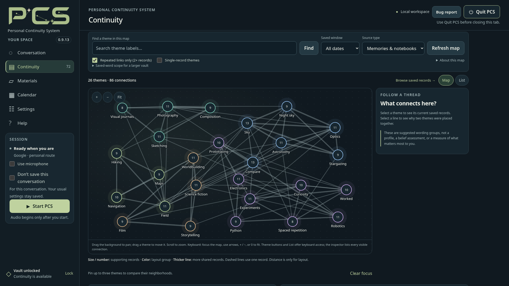
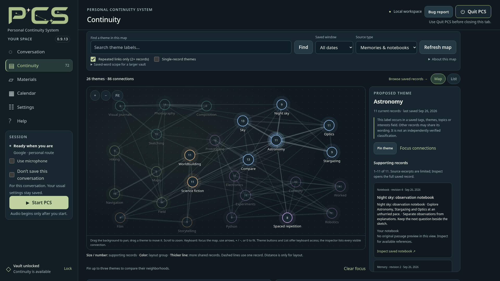
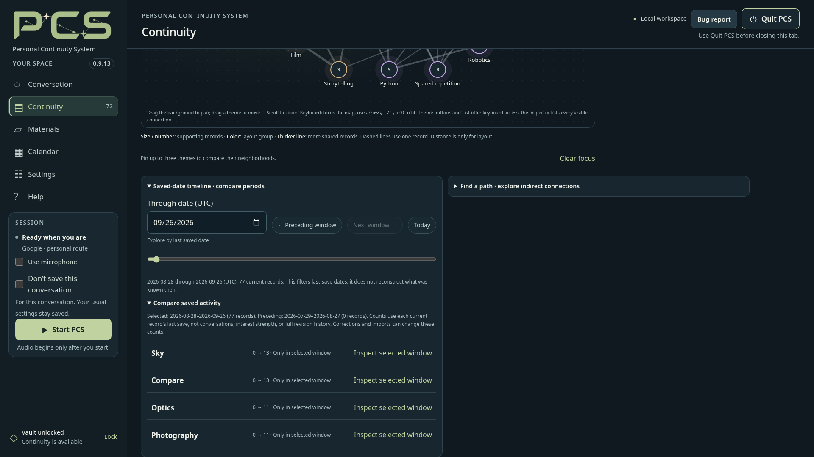

In this guide & related guides
- Open a local overview
- Inspect the evidence
- Saved-date comparisons
- Paths between themes
- Coverage and privacy
Read next
Open a local overview
Unlock the vault, open Continuity → Map , and refresh. A conversation, API key or Local model is not needed. This view makes no AI requests. It groups recurring wording and saved topic labels from current memories and notebooks; it is not a map of a person’s mind or a model’s hidden reasoning. Use the neighboring Library tab to browse saved records directly, including ones not shown in the bounded map.
{kind=link}

Open imageRead the connection, then its evidence
A node’s count is the number of supporting current records, not confidence or independent conversations. A line means both labels occur in the same supporting records. Select a line for Why connected? , expand source excerpts, and open the original record inspector. Colors group layout neighborhoods; closeness alone is not a relationship.
Use search, filters, zoom, pan, dragging and up to three pins. List provides a keyboard-friendly alternative. Single-record themes and one-record links can expose smaller topics, but do not acquire extra certainty.
{kind=link}

Open imageCompare last-saved dates—not past beliefs
Open Saved-date timeline below the graph, choose a UTC through-date and a 30- or 90-day window. Compare with the immediately preceding equal-length window. All dates has no equal-period comparison. The slider requests a new view when the change is committed.
These are current records’ last-saved or edited dates , not discussion frequency, belief strength, growing interests or the date an event happened. Correcting a record can move it to another period. Deleted records and earlier revisions are not reconstructed by moving backward in time.
{kind=link}

Open imageFollow a displayed path
Choose two visible themes with Find a path and inspect each step of the shortest displayed route. Two-step connections show existing routes through a middle theme. They do not invent direct endpoint links. The endpoints need not share any record; a path does not prove agreement, causation or a practical dependency.
Understand the coverage
The overview scans up to 300 matching memories and 128 notebooks with bounded text, showing at most 30 themes and 120 connections. Evidence cards are paged. Date filters apply after the bounded scan, so counts may not describe an entire large vault. Use saved-word scope to narrow the underlying records. Empty results do not prove that no meaningful connection exists.
Map is read-only. Explicit edits in the existing full inspector can still change the vault. Pins, layout and search are temporary; lock, ownership changes, temporary-saving transitions and relevant edits revoke stale views. The Map does not stop already-enabled screen sharing from capturing visible private content.
Guide for PCS 0.9.13. See the bundled Help and release notes for detailed controls and limitations.